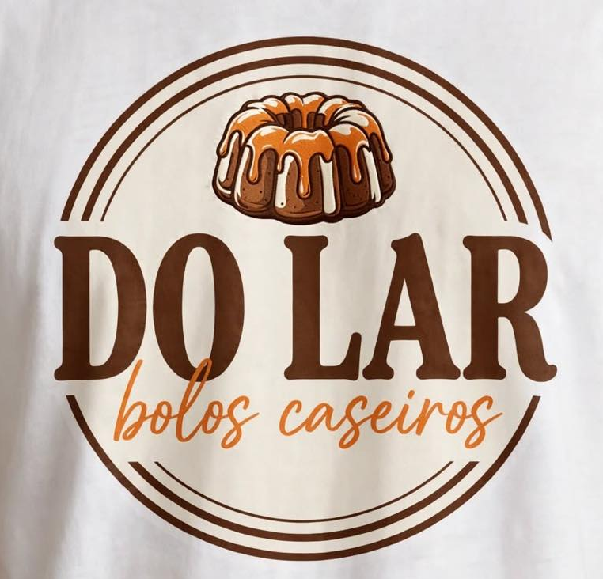
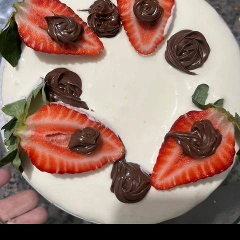
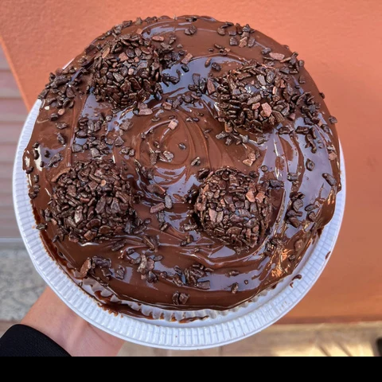
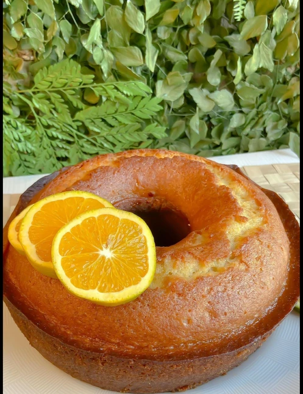

Escolha seus sabores
Explore o cardápio e adicione seus bolos favoritos ao pedido.

POR PEDRO OLIVEIRABOLOS CASEIROS, MEMÓRIAS ESPECIAIS
Tem bolo que combina com café. E tem bolo que combina com a vida. Encontre o seu e deixe o dia mais gostoso.


O próximo caféESCOLHA SEU PRÓXIMO MOMENTO DOCE
Clássicos para o café, coberturas para se apaixonar e combinações para celebrar.
Fotos ilustrativas do cardápio. Valores conforme o material enviado. Disponibilidade, tamanhos e entrega devem ser confirmados no atendimento.

A ESSÊNCIA DO LAR
A mesa posta. O café passando. A primeira fatia. Alguns momentos pedem a simplicidade de um bom bolo caseiro.
A DO LAR, por Pedro Oliveira, reúne os sabores tradicionais e aquelas combinações especiais que transformam uma pausa em um encontro gostoso.
DA ESCOLHA À PRIMEIRA FATIA
Você escolhe por aqui.
A gente combina os detalhes no WhatsApp.
Explore o cardápio e adicione seus bolos favoritos ao pedido.
Envie a seleção pelo WhatsApp e confirme disponibilidade, data, retirada ou entrega.
O pagamento antecipado confirma a reserva. Depois, é só esperar seu momento doce.
ANTES DE PEDIR
Escolha os bolos e clique em “Meu pedido”. A seleção será preparada para envio pelo WhatsApp. O pedido e a reserva só ficam confirmados após o atendimento e o pagamento antecipado.
Consulte as opções de retirada e entrega pelo WhatsApp. Endereço, região atendida, prazo e eventual taxa serão combinados diretamente com a DO LAR.
Confirme peso, tamanho e rendimento de cada sabor no atendimento. O cardápio também apresenta o bolo de 12 fatias em duas combinações de Ninho.
Antes de encomendar, informe sua restrição e consulte ingredientes e possibilidade de contato cruzado com a equipe. Não há indicação de produtos livres de alérgenos neste cardápio.
SEMPRE HÁ UM BOM MOTIVO
Seu próximo bolo favorito está a uma conversa de distância.
Encomendar pelo WhatsApp ↗(31) 99791-3049